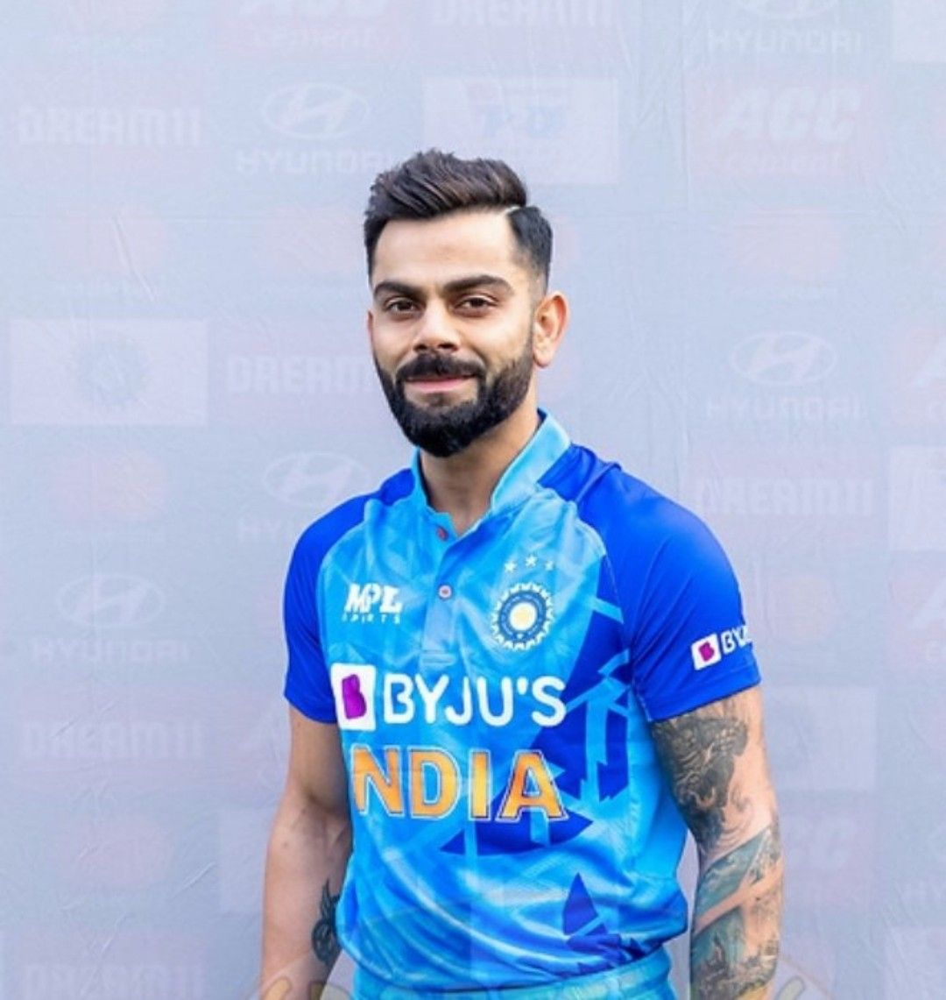

click the below player to go to specific team for the player.


The 2023 ICC Men's Cricket World Cup will be the 13th edition of the Cricket World Cup, a quadrennial One Day International (ODI) cricket tournament contested by men's national teams and organized by the International Cricket Council (ICC). It is scheduled to be hosted by India From 5 October to 19 November 2023. 10 teams will contest the tournament; England are the defending champions, having won the previous edition in 2019. It will be the first men's Cricket World Cup to be hosted solely by India, after co-hosting the 1987, 1996, and 2011 tournaments with other countries on the Indian subcontinent. The final is scheduled to be played at the Narendra Modi Stadium on 19 November 2023. Mumbai and Kolkata will host the two semifinals.
Originally, the tournament was scheduled to be played from 9 February to 26 March 2023[1][2] however, in July 2020, it was announced that the tournament would be delayed to an October November window,[3][4] following the disruption of the qualification schedule due to the COVID-19 pandemic.[3] In March 2023, ESPNcricinfo reported that the tournament was expected to be played from 5 October to 19 November.[5] ICC released the tournament schedule on 27 June.[6][7] The Pakistan Cricket Board (PCB) had threatened to boycott the World Cup after the Board of Control for Cricket in India (BCCI) refused to send its team to the 2023 Asia Cup scheduled in Pakistan.[8][9] On 15 June 2023, the Asian Cricket Council announced that 2023 Asia Cup will be hosted in a hybrid model as proposed by PCB.[10][11] However, before the announcement of schedule of 2023 Asia Cup, former PCB chairman Najam Sethi expressed his unwillingness to play any group league matches at Narendra Modi Stadium in Ahmedabad except the knockout matches, subject to clearance from the Government of Pakistan. He also wished to have all their games played in Bengaluru, Chennai, or Kolkata.[12]
The tournament will feature ten teams, like the previous edition. The main route for qualification will be the 2020-2023 ICC Cricket World Cup Super League tournament.[13] The top seven sides plus the hosts (India) from the thirteen competitors in the Super League are qualified for this World Cup. The remaining five teams, along with five associate sides, are presently playing in the 2023 Cricket World Cup Qualifier, from which two teams will go through to the final tournament.[14][15]